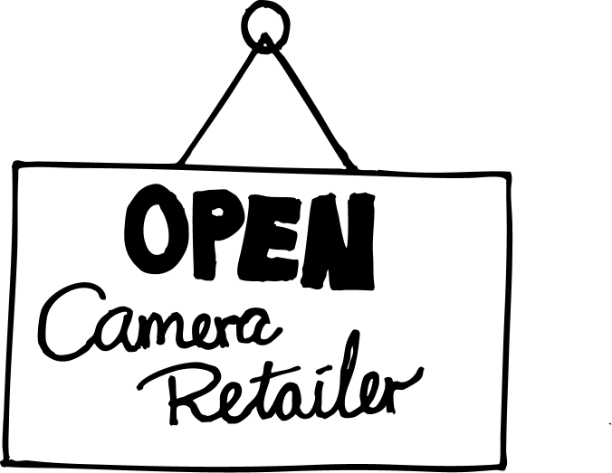

DEL DINE INSTANS & VIND!
DEL I LØBET AF UGE 42

DEL DINE INSTANTS & VIND!
Instant Ugen en hyldest til instant-fotografering; En opfordring til at udforske instant-fotografiets glæder. Instant Ugen foregår to gange årligt: I påsken og efteråret.
Så find dit Polaroid-, Instax- eller hvilket som helst andet instant-kamera, frem, og vis os dine instants. Instant Ugen er ikke rigtig en fotokonkurrence, det er mere en hyldest til god gammeldags analog instant-fotografering - alle, der deltager, er vindere!
Næste Instant Uge løber af staben i uge 14 - d. 30 marts til den 6. april 2026.

HVORFOR INSTANTFOTO?
Det hele startede tilbage i 1940'erne. Edwin Land fotograferede livets begivenheder, og en dag på stranden med sin 3-årige datter, gjorde hun opmærksom på, at hun ville se billederne med det samme!
Edwin satte sig selv en stor opgave: At opfinde en film, der kunne fremkalde sig selv. Hurtigt. Et halvt årti senere etablerede Edwin Land virksomheden Polaroid, som nu om dage nærmest er synonymt med Instant foto.
Instant foto blev til en omfattende forretning i 70'erne og 80'erne, indtil den digitale æra næsten slog hele branchen ihjel. Nu er instant foto stærkt på vej tilbage:
Så lad os fejre livet og skabe minder :-)

FUN FACTS
Polaroid gik konkurs i 2001 under vægten af den digitale revolution, men varemærket overlevede og fik årtier senere et markant retro-comeback hos nye generationer.
Markedet vokser nu igen, drevet af en stærk længsel efter ægte, fysiske billeder i en tid, hvor alt ellers ligger glemt på vores telefoner.
Flylufthavne og røntgen: Gammeldags og moderne instant-film er så lys- og strålefølsomme, at lufthavnenes røntgenmaskiner kan beskadige eller ødelægge filmen permanent.
Instant-foto blev opfundet i 1948 af Edwin Land, som revolutionerede fotografiet ved at skabe et kamera, der kunne fremkalde et færdigt papirbillede på under et minut.
Der blev solgt over 10 millioner instant-kameraer i 1978, hvor butikkerne oplevede et historisk stormløb på de populære modeller.

HVEM ER DOMMERNE?


SPONSORER